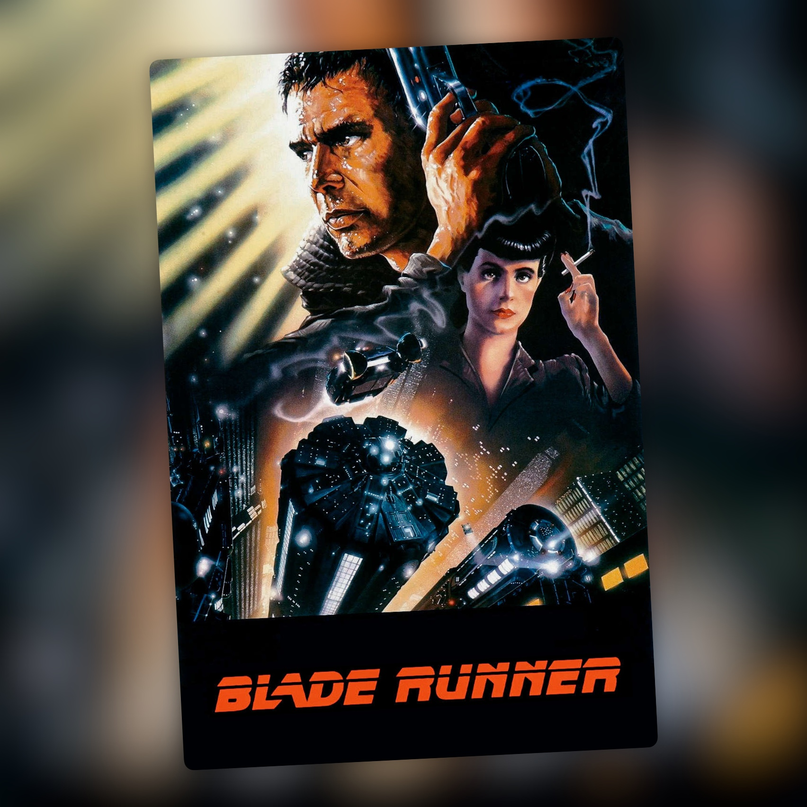

Blade Runner (1982)
Una de las grandes películas de cine negro y ciencia ficción

Blade Runner es una de mis películas favoritas de todos los tiempos. Para mí es una cima del cine negro y la película que sentó buena parte de las bases estéticas del ciberpunk. Cuando se estrenó en 1982 recibió críticas bastante tibias y no funcionó en taquilla. El tiempo la ha colocado en otro lugar: hoy es una película de culto absoluto y una referencia para cualquiera que se acerque a la ciencia ficción.
Ridley Scott venía de Alien y de muchos años rodando anuncios. Estaba preparando una adaptación de Dune, pero la dejó tras la muerte de su hermano mayor y acabó aceptando este proyecto. El punto de partida era ¿Sueñan los androides con ovejas eléctricas?, la novela que Philip K. Dick publicó en 1968. Hampton Fancher, que hasta entonces era sobre todo actor, escribió el primer guion, y David Peoples lo reescribió después. Años más tarde Peoples firmaría Sin perdón y Doce monos. La película adapta el libro con mucha libertad. Dick murió en marzo de 1982, tres meses antes del estreno, pero llegó a ver parte de los efectos visuales y le gustó lo que vio.
La historia nos lleva a un Los Ángeles de 2019 oscuro, lluvioso y abarrotado. Rick Deckard (Harrison Ford) es un antiguo blade runner, un policía especializado en localizar y retirar replicantes, androides prácticamente idénticos a los humanos. Cuando cuatro de ellos regresan a la Tierra, Deckard recibe el encargo de encontrarlos. Lo que parece una historia de detectives acaba convirtiéndose en algo bastante más complejo, con preguntas sobre la identidad, los recuerdos y qué significa ser humano.
La película es cine negro de principio a fin. Deckard es ese detective cansado que vuelve a meterse en un caso que preferiría evitar, hay personajes que esconden cosas, ambientes turbios y una ciudad en la que parece que nunca deja de llover. La narración en off de la versión original refuerza todavía más esa conexión con los clásicos del género y las películas de detectives. A mí me encanta. Creo que esa voz de Deckard forma parte de lo que hace especial a este montaje.
La fotografía de Jordan Cronenweth es una maravilla, y le valió el BAFTA. La película vive casi siempre en la oscuridad, entre humo, lluvia, neones y sombras, con fogonazos de luz que aparecen de repente y cambian por completo una imagen. Muchos salen de los focos de los vehículos y de las naves publicitarias, que barren las calles y se cuelan por las ventanas de los pisos. La ciudad parece un lugar que lleva décadas acumulando edificios, anuncios y gente, y que sigue creciendo aunque ya no quede espacio. Syd Mead entró en el proyecto para diseñar los vehículos, pero sus dibujos de fondo convencieron a Scott y al diseñador de producción Lawrence G. Paull, y acabó ayudando a dar forma a toda la ciudad. En los créditos aparece como «futurista visual». Scott quería un futuro usado, lleno de capas y de cosas añadidas con el paso del tiempo, muy lejos de las ciudades limpias y brillantes que solía enseñar la ciencia ficción.
Harrison Ford me encanta como Deckard. Tiene esa mezcla de cansancio, dureza y vulnerabilidad que necesita el personaje. El resto del reparto está fantástico: Sean Young como Rachael, Edward James Olmos como Gaff, Daryl Hannah como Pris y, por supuesto, Rutger Hauer como Roy Batty. Hauer consigue que el replicante sea una presencia amenazadora y, al mismo tiempo, un personaje al que acabas entendiendo.
Su monólogo final es uno de esos momentos que se quedan contigo. El guion de David Peoples le daba un discurso más largo, que a Hauer le parecía demasiado cargado de jerga tecnológica. Según contó él mismo, la noche anterior al rodaje lo recortó y añadió la frase de las lágrimas en la lluvia, la que hoy recuerda todo el mundo. También insistió siempre en que el mérito era compartido con Peoples. Es difícil pensar en Blade Runner sin acordarse de Roy Batty bajo la lluvia.
La música de Vangelis también es parte de la película. Sus sintetizadores, mezclados con sonidos de jazz y ambientes electrónicos, acompañan perfectamente esas calles y esa sensación de soledad. La fotografía, los decorados, la música y los personajes forman un mundo que parece existir más allá de lo que vemos en pantalla.
La historia de sus montajes daría para otra reseña. Scott no tenía el control del montaje final, y cuando las proyecciones de prueba de Denver y Dallas salieron mal, los productores impusieron la voz en off y un final feliz. Para ese final se usaron planos aéreos que Stanley Kubrick había rodado para El resplandor y que le prestó a Scott. Ford grabó la narración a disgusto y nunca la defendió. A mí me gusta igual. A principios de los noventa, un cine de Los Ángeles proyectó por error una copia de trabajo sin narración. Tuvo éxito, y Warner decidió sacar en 1992 un «montaje del director» que en realidad se hizo con prisas a partir de las notas de Scott. La versión que Scott supervisó de principio a fin es The Final Cut, de 2007. En esas dos desaparecen la voz en off y el final añadido por el estudio, y aparece el sueño del unicornio. Entiendo que Scott quisiera acercarse a su idea original, pero esa narración de Deckard forma parte de la película que descubrí y que tanto me marcó.
Cada vez que vuelvo a Blade Runner me encuentro con una película que sigue funcionando como el primer día. Me encanta su fotografía, su música, sus personajes y esa mezcla de cine negro y ciencia ficción que tan pocas veces se ha conseguido repetir. Para mí sigue siendo una de las grandes películas de la historia del cine y una de mis favoritas. Puedo entender que haya quien prefiera otros montajes, pero yo me quedo con la primera versión, con la voz de Deckard y con ese Los Ángeles oscuro que Ridley Scott imaginó en 1982.
Ficha técnica
- Título original: Blade Runner
- Dirección: Ridley Scott
- Guion: Hampton Fancher y David Webb Peoples, basado en la novela ¿Sueñan los androides con ovejas eléctricas?, de Philip K. Dick
- Reparto principal: Harrison Ford, Rutger Hauer, Sean Young, Edward James Olmos, Daryl Hannah, Joanna Cassidy, Brion James, Joe Turkel y M. Emmet Walsh
- Año: 1982
- Duración: 117 min (montaje original)
- Plataforma(s) actual(es) en España: Prime Video, Movistar Plus+ y HBO Max